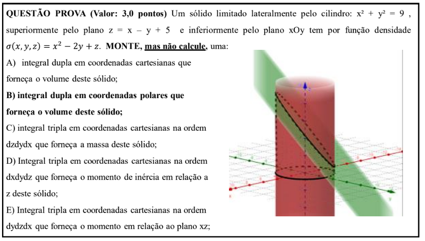

Enunciado da Questão
A questão pede para montar, mas não calcular, cinco integrais diferentes relacionadas a um sólido com geometria e densidade específicas.
Análise Inicial do Sólido
Antes de montar as integrais, é fundamental compreender o sólido. Ele é definido por:
- Limite lateral: O cilindro \(x^2 + y^2 = 9\). É um cilindro de raio 3 centrado no eixo z.
- Limite superior: O plano inclinado \(z = x - y + 5\).
- Limite inferior: O plano xOy, que é o mesmo que \(z = 0\).
A função densidade de massa do sólido é dada por \(\sigma(x, y, z) = x^2 - 2y + z\).
A) Integral Dupla em Coordenadas Cartesianas para o Volume
O volume de um sólido pode ser encontrado integrando a função "altura" sobre a região da sua base no plano xy.
- Região de Integração (Base D): A base do sólido é a projeção do cilindro no plano xOy, que é o círculo \(x^2 + y^2 \le 9\).
- Função Altura \(h(x,y)\): A altura é a diferença entre o teto e o piso do sólido.
- Teto: \(z_{superior} = x - y + 5\)
- Piso: \(z_{inferior} = 0\)
- Altura: \(h(x, y) = (x - y + 5) - 0 = x - y + 5\)
- Montagem da Integral: Para descrever a região circular \(D\) em coordenadas cartesianas, temos \(x\) variando de -3 a 3, e para cada \(x\), \(y\) varia entre \(-\sqrt{9 - x^2}\) e \(\sqrt{9 - x^2}\).
\[ V = \int_{-3}^{3} \int_{-\sqrt{9 - x^2}}^{\sqrt{9 - x^2}} (x - y + 5) \,dy\,dx \]
B) Integral Dupla em Coordenadas Polares para o Volume
A base circular do sólido torna as coordenadas polares uma escolha natural e muito mais simples para a integração.
- Transformação de Coordenadas: Usamos \(x = r \cos(\theta)\), \(y = r \sin(\theta)\), e o elemento de área \(dA = dx\,dy\) se torna \(r\,dr\,d\theta\).
- Região de Integração em Polares: O círculo \(x^2 + y^2 \le 9\) torna-se \(r^2 \le 9\), então \(0 \le r \le 3\). Para o círculo completo, \(0 \le \theta \le 2\pi\).
- Função Altura em Polares: Substituímos \(x\) e \(y\) na função altura: \(h(r, \theta) = r \cos(\theta) - r \sin(\theta) + 5\).
\[ V = \int_{0}^{2\pi} \int_{0}^{3} (r \cos(\theta) - r \sin(\theta) + 5) \,r\,dr\,d\theta \]
Atenção: Lembre-se sempre de incluir o fator \(r\) no diferencial ao converter para coordenadas polares!
C) Integral Tripla em Cartesianas (dzdydx) para a Massa
A massa de um sólido com densidade variável é a integral tripla da função densidade sobre o volume do sólido.
- Função a ser Integrada: A própria função densidade \(\sigma(x, y, z) = x^2 - 2y + z\).
- Ordem de Integração (\(dz\,dy\,dx\)): Esta é a ordem mais "natural" para este sólido.
- Limites de \(z\) (de baixo para cima): O sólido vai do plano \(z=0\) até o plano \(z = x - y + 5\).
- Limites de \(y\) e \(x\): Estes definem a projeção na base, exatamente como no item A.
\[ M = \int_{-3}^{3} \int_{-\sqrt{9 - x^2}}^{\sqrt{9 - x^2}} \int_{0}^{x - y + 5} (x^2 - 2y + z) \,dz\,dy\,dx \]
D) Integral Tripla em Cartesianas (dxdydz) para o Momento de Inércia em Relação ao Eixo z
O momento de inércia \(I_z\) mede a resistência do sólido à rotação em torno do eixo z.
- Fórmula: \(I_z = \iiint_V (\text{distância ao eixo z})^2 \cdot \sigma \,dV\). A distância de um ponto \((x,y,z)\) ao eixo z é \(\sqrt{x^2+y^2}\), então seu quadrado é \((x^2+y^2)\).
- Função a ser Integrada: \((x^2 + y^2) \cdot (x^2 - 2y + z)\).
- Ordem de Integração (\(dx\,dy\,dz\)): Esta ordem é muito complexa para este sólido, pois exige projetá-lo no plano yz. Os limites de integração se tornam dependentes e difíceis de descrever em uma única integral.
- Limites de \(x\) (o mais interno): Para um \((y, z)\) fixo, \(x\) é limitado pelo cilindro (\(x=\pm\sqrt{9-y^2}\)) e pelo plano (\(x \ge z+y-5\)).
- Limites de \(y\) e \(z\): Definem a projeção no plano yz, que não é uma forma geométrica simples.
A montagem exata é extremamente complexa e provavelmente exigiria a divisão da integral. A forma geral é:
\[ I_z = \int_{z_{min}}^{z_{max}} \int_{y_{min}(z)}^{y_{max}(z)} \int_{x_{min}(y,z)}^{x_{max}(y,z)} (x^2 + y^2)(x^2 - 2y + z) \,dx\,dy\,dz \]
Esta parte provavelmente testa a habilidade de reconhecer a dificuldade da ordem de integração.
E) Integral Tripla em Cartesianas (dydzdx) para o Momento em Relação ao Plano xz
O momento de massa em relação ao plano xz, \(M_{xz}\), descreve como a massa do sólido está distribuída em relação a este plano.
- Fórmula: \(M_{xz} = \iiint_V y \cdot \sigma(x,y,z) \,dV\). O "braço" é a coordenada \(y\).
- Função a ser Integrada: \(y(x^2 - 2y + z)\).
- Ordem de Integração (\(dy\,dz\,dx\)): Similar ao item D, esta ordem não é natural para a geometria do sólido.
- Limites de \(x\) (o mais externo): \(-3 \le x \le 3\).
- Limites de \(z\) (meio): Exigem a projeção do sólido no plano xz, que é limitada por \(z=0\) e \(z = x + \sqrt{9-x^2} + 5\).
- Limites de \(y\) (o mais interno): Para um \((x,z)\) fixo, \(y\) é limitado pelo cilindro e pelo plano, resultando em \(y \le \min(\sqrt{9-x^2}, x+5-z)\).
A montagem correta também é complexa. A estrutura seria:
\[ M_{xz} = \int_{-3}^{3} \int_{0}^{x+\sqrt{9-x^2}+5} \int_{-\sqrt{9-x^2}}^{\min(\sqrt{9-x^2}, x+5-z)} y(x^2 - 2y + z) \,dy\,dz\,dx \]
Assim como no item anterior, o desafio principal aqui é a visualização geométrica e a descrição dos limites para uma ordem de integração não trivial.